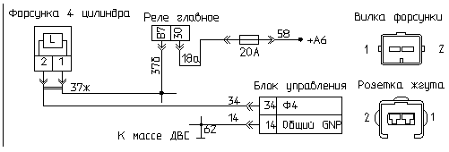

главная → коды ГАЗ
Код 142—обрыв цепи форсунки 4
- Причина 1: Форсунка 4 не подключена к жгуту проводов.
- Причина 2: обрыв провода электропитания форсунки 4.
- Причина 3: обрыв цепи управления форсункой 4.
- Причина 4: неисправность (обрыв обмотки) форсунки 4.
- Причина 5: неисправность блока управления.
- Способы проверки исправности цепи форсунки 4.
Форсунка 4 не подключена к жгуту проводов

- Проверьте подключение форсунки 4 к жгуту проводов. При необходимости выполните подключение форсунки.
- Включите зажигание, сбросьте коды неисправностей, запустите двигатель и проконтролируйте отсутствие кода неисправности «142».
Обрыв провода электропитания форсунки 4
- Отсоедините защитный чехол розетки жгута проводов форсунки 4. Включите зажигание и проверьте вольтметром напряжение между выводом «2» форсунки и металлической массой двигателя. Оно должно быть примерно равно напряжению аккумулятора. Если измеренное напряжение
близко к нулю, то вероятно имеет место обрыв цепи электропитания форсунки.
- Отсоедините форсунку от жгута проводов и проверьте омметром целостность цепи «37ж» между контактом «2» розетки форсунки и контактом «87» (или «30») розетки главного реле. Обратите внимание: возможно контакты в розетках утоплены или повреждены.
- Устраните неисправность жгута проводов.
- Включите зажигание, сбросьте коды неисправности, запустите двигатель и проконтролируйте отсутствие кода неисправности «142».
Обрыв цепи управления форсункой 4
- Отсоедините защитный чехол розетки жгута проводов форсунки 4. Включите зажигание, запустите двигатель и проверьте пробником
прохождение сигнала на вывод «1» форсунки: если лампа пробника слегка мигает—канал управления форсункой исправен, если нет—
возможно неисправен жгут проводов.
- Отсоедините форсунку и блок управления от жгута проводов и проверьте омметром целостность цепи «34»: между контактом «1» розетки форсунки и контактом «34» розетки блока. Обратите внимание: возможно контакты в розетках утоплены или повреждены.
- Устраните неисправность жгута проводов.
- Включите зажигание, сбросьте коды неисправности, запустите двигатель и проконтролируйте отсутствие кода неисправности «142».
Неисправность (обрыв обмотки) форсунки 4
- Отключите форсунку 4 от жгута проводов. Проверьте осмотром целостность контактов вилки форсунки, при необходимости
очистите контакты пинцетом от грязи и окислов.
- Проверьте омметром активное сопротивление обмотки форсунки—оно должно быть 15—17 Ом без учета переходного сопротивления контактов омметра.
Если сопротивление значительно больше или близко к «бесконечности», то вероятно имеет место внутренний обрыв обмотки форсунки.
- Замените форсунку на заведомо исправную.
- Включите зажигание, сбросьте коды неисправности, запустите двигатель и проконтролируйте отсутствие кода неисправности «142».
Неисправность блока управления двигателем

- Отсоедините блок управления от жгута проводов и внимательно осмотрите целостность контактов розетки жгута и вилки блока.
При необходимости отрихтуйте контакты соединителя или замените их. При обнаружении воды в соединителе блок необходимо снять, остатки
воды удалить, просушить блок при температуре не выше 85°C
- Подключите к системе контрольный блок управления. Обратите внимание! Тип и обозначение исполнения контрольного блока
должны совпадать с тестируемым блоком. Для этого сравните паспортные данные блоков в процедуре «Паспорт».
- После замены тестируемого блока на контрольный включите зажигание, запустите двигатель и проконтролируйте отсутствие кода неисправности «142».
- Если код «142» не регистрируется на контрольном блоке, то замените тестируемый блок на исправный.
Способы проверки исправности цепи форсунки 4
- Отключите зажигание и отсоедините форсунку от жгута проводов.
- Замкните перемычкой контакты розетки форсунки, включите зажигание, сбросьте коды неисправности и через 10 секунд проверьте наличие кода неисправности:
- если по-прежнему фиксируется код «142»—неисправен блок управления или жгут проводов;
- если фиксируется код «141»—неисправна форсунка (внутренний обрыв обмотки).
- Снимите перемычку.
- При наличии кода «142» подключите форсунку к жгуту проводов. Подключите вместо тестируемого блока управления контрольный блок.
Включите зажигание и сбросьте коды неисправности. Если через 10 секунд по-прежнему фиксируется код «142»—неисправен жгут проводов.
|